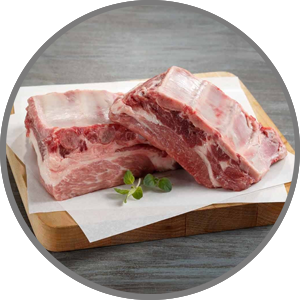
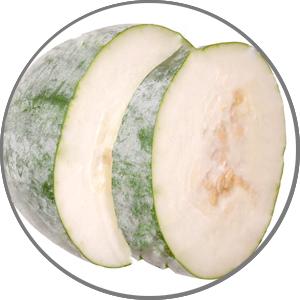
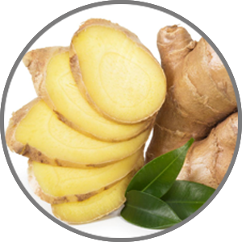
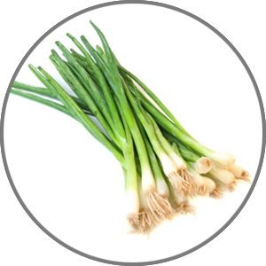

WinterMelon Soup

500 g
Pork ribs

750 g
Winter melon

5 pieces ginger
Ginger

30 g
Greenonions

500ml
Water
- Clean the pork ribs and cut them into 2 cm (1") chunks.
- Peel the winter melon and dice it into 2 cm (1") pieces.
- Clean the mature ginger and slice it thinly.
- Pour the water into a pot and bring it to a boil. When the water is boiling, add the pork ribs. Cook for about 15 minutes.
- Add the winter melon and salt when the ribs are cooked through.
- Add the sliced ginger.
- Continue to cook on a medium heat for about 20 minutes.
- The soup is now ready so spoon it into serving bowls.